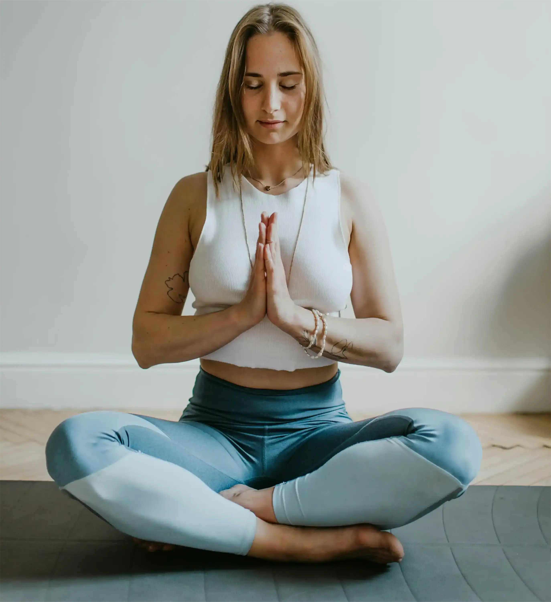
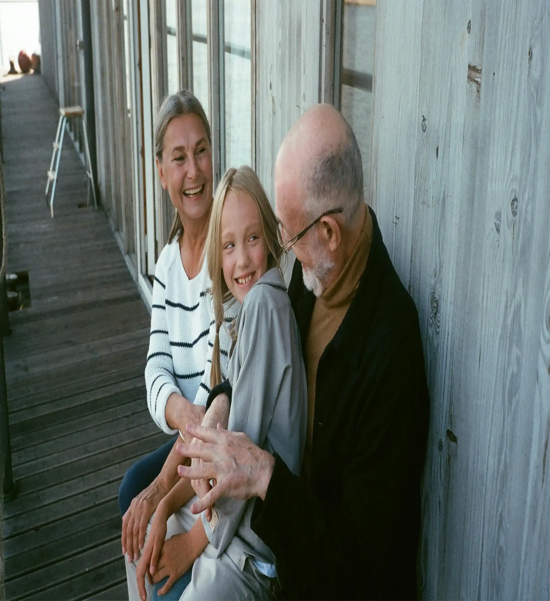

Practice Mindfulness
Description: Spend a few minutes each day practicing mindfulness. Focus on your breathing, stay present in the moment, and let go of distractions. Mindfulness can reduce stress and improve emotional well-being.
Quick Tip: Try starting your day with 5 minutes of mindful brething before checking your phone or starting work.
Exercise Regularly
Description: Physical activity helps to release endorphins, which are natural mood boosters. Regular exercise can improve your mood, reduce anxiety, and increase overall energy.
Quick Tip: Even a 10-minute walk can help clear your mind and elevate your mood.
Get Enough Sleep
Description: Sleep is crucial for mental and emotional health. Make sure you're getting 7-9 hours of restful sleep every night to recharge and reset.
Quick Tip: Establish a calming bedtime routine by avoiding screens at least an hour before bed.
Connect with Loved Ones
Description: Strong social connections are key to good mental health. Make time to talk to friends or family members, even if it's just a short phone call or text.
Quick Tip: Set aside 10 minutes each day to check in on a friend or family member, whether through a quick message or a video chat.
Limit Screen Time
Description: Excessive screen time, especially on social media, can lead to anxiety and stress. Set boundaries for your use of technology to maintain balance.
Quick Tip: Use your phone's screen-time tracker to set limits on social media apps.
Practice Gratitude
Description: Cultivating gratitde can shift your focus from the negative to the positive. Write down three things that you ae grateful for every day to foster a more positive mindset.
Quick Tip: Keep a gratitude journal and make it a habit to jot down things you're thankful for each morning.
Stay Hydrated
Description: Drinking water throughout the day is essential for both physical and mental health. Dehydratiion can lead to feelings of fatigue and irritability.
Quick Tip: Keep a bottle of water by your side throughout the day as a reminder to stay hydrated.
Unplug and Recharge
Description: Taking time to disconnect from technology and social media can help you clear your mind and reduce overhelming feelings.
Quick Tip: Schedule "unplugged" times each week where you take a break from all digital devices
Set Boundaries
Description: Protect your mental health by learning to say no and setting healthy bondaries in your personal and professional life.
Quick Tip: Start with small boundaries, like not answering work emails after a certain time.
Engage in Creative Hobbies
Description: Pursuing a creative hobby, such as photography, painting, writing, or playing music, can be a great way to relieve stress and express emotions.
Quick Tip: Try setting aside 30 minutes once a week to engage in a creative activity that brings you joy.